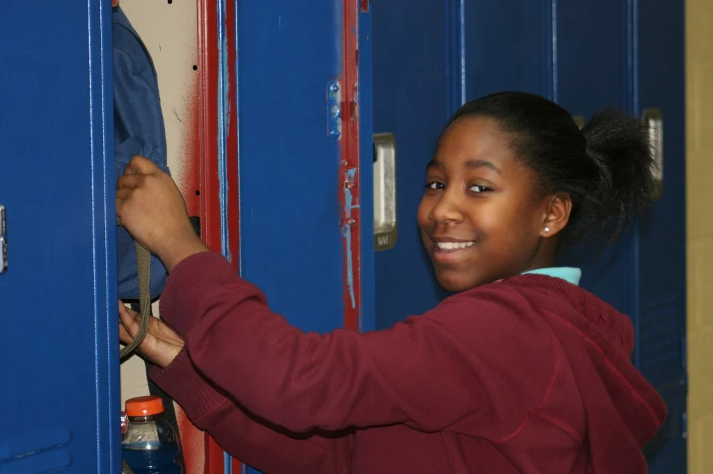
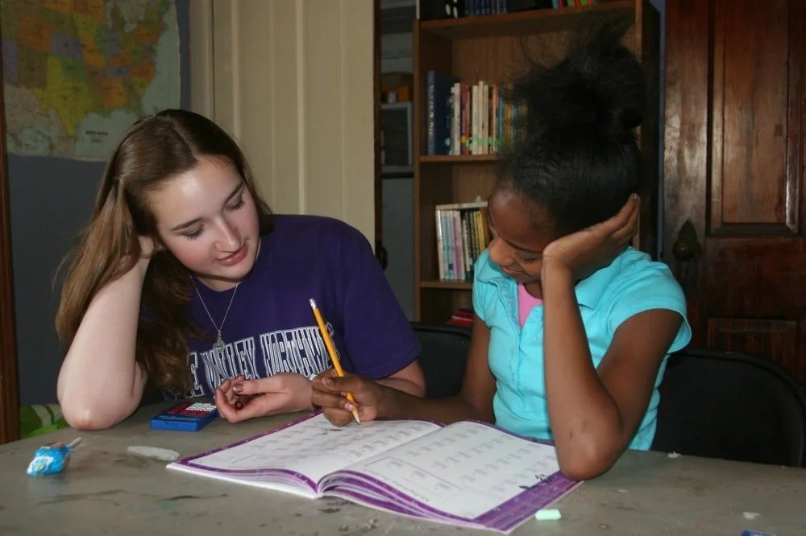

Education

As we have gotten to know our community through outreach and bible study, we realized that many of our kids were lacking basic reading skills. We spent time mentoring kids in the local elementary schools and saw first hand the challenges they were facing in the learning environment. We knew this was going to be a problem we wanted to address. Our Education initiatives include the following:
After-school Tutoring:

In 1999 we started after school tutoring emphasizing reading and math. This program is still conducted on Tuesday, Wednesday and Thursday afternoons from 3:30pm-6:00pm. Times are flexible based on the availability of the tutor. Freedom Fire screens and recruits the students from our neighborhood activities. Relationships are important, so tutors meet consistently with the same student each week, building friendship along the way. Training and background checks are required for tutors. This is a great way to deeply impact and prepare our students for their future.
Volunteers sometimes feel that they can’t help in this area because “it’s been too long since I had algebra myself!” Don’t worry, most of our tutoring kids are in grade school, and much of the work is helping the kids catch up who are behind in reading and math skills.
And this is a super way to meet a number of our best kids, and make a meaningful impact!!
Kansas City Christian School:
In 2006 we added a scholarship program starting with 3 students at Kansas City Christian School in Prairie Village. We now have about 10 children per year involved in the program, with their ages ranging from elementary to high school. We provide daily transportation and thorough tutoring, while the atmosphere in the school fosters Christian character and excellence in education. The cost per child for this program is about $8000 per year covering the scholarship and transportation costs. If you are interested in volunteering to tutor a child or helping with the costs, please contact Bruce McGregor at 816-726-0077.
SOUL (School of Urban Leadership):
The School of Urban Leadership has been a part of Freedom Fire for many years. This is a place where our staff and patrons can participate in theology classes, and earn schools credits for doing so.